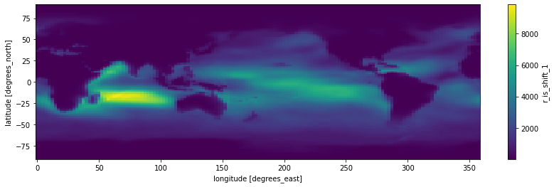
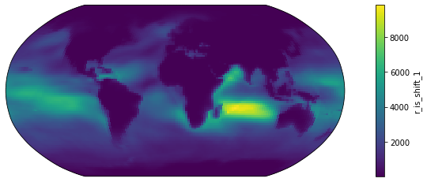
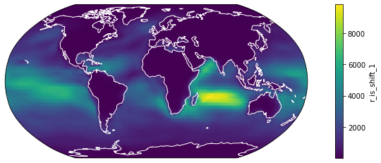
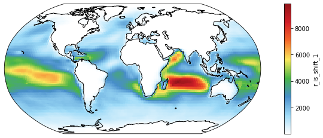
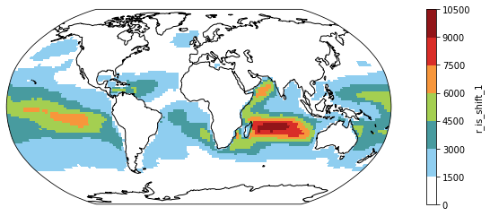
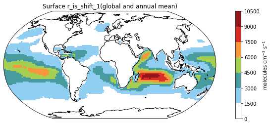
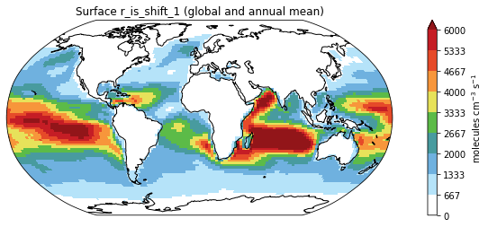

Python Basics for CESM
References:
For general python handling of nc files: https://github.com/geoschem/GEOSChem-python-tutorial
For NCL plot styles: http://www.pyngl.ucar.edu/
For merging nc files: https://medium.com/@neetinayak/combine-many-netcdf-files-into-a-single-file-with-python-469ba476fc14
For NCL color scales: https://github.com/hhuangwx/cmaps
This is an example to show how to combine multiple ncdf files, compute annual means, and make plots.
import numpy as np # for better array
import xarray as xr # the major tool to work with NetCDF data!
Merging monthly .nc files
Below is a list of files for this example. They are nc files named after case name, for each month in 2016.
Note that we could use, in the code, % (magic link) to call a function on the shell level.
%ls _data/*.nc
_data/FC2000climo.f19_f19.2_1_MOSAIC.OAS_KPP_ISO.cam.h0.2016-01.nc
_data/FC2000climo.f19_f19.2_1_MOSAIC.OAS_KPP_ISO.cam.h0.2016-02.nc
_data/FC2000climo.f19_f19.2_1_MOSAIC.OAS_KPP_ISO.cam.h0.2016-03.nc
_data/FC2000climo.f19_f19.2_1_MOSAIC.OAS_KPP_ISO.cam.h0.2016-04.nc
_data/FC2000climo.f19_f19.2_1_MOSAIC.OAS_KPP_ISO.cam.h0.2016-05.nc
_data/FC2000climo.f19_f19.2_1_MOSAIC.OAS_KPP_ISO.cam.h0.2016-06.nc
_data/FC2000climo.f19_f19.2_1_MOSAIC.OAS_KPP_ISO.cam.h0.2016-07.nc
_data/FC2000climo.f19_f19.2_1_MOSAIC.OAS_KPP_ISO.cam.h0.2016-08.nc
_data/FC2000climo.f19_f19.2_1_MOSAIC.OAS_KPP_ISO.cam.h0.2016-09.nc
_data/FC2000climo.f19_f19.2_1_MOSAIC.OAS_KPP_ISO.cam.h0.2016-10.nc
_data/FC2000climo.f19_f19.2_1_MOSAIC.OAS_KPP_ISO.cam.h0.2016-11.nc
_data/FC2000climo.f19_f19.2_1_MOSAIC.OAS_KPP_ISO.cam.h0.2016-12.nc
_data/FC2000climo.f19_f19.2_1_MOSAIC.OAS_KPP_ISO.cam.i.2017-01-01-00000.nc
We use the function xr.open_mfdataset from the xarray package. specifying the “names, combining method and dimension for concatenation. Note the use of * as a wildcard.
ds = xr.open_mfdataset(paths='_data/*.cam.h0.2016-*.nc', combine='by_coords', concat_dim="time")
# ds
Done! Couldn’t imagine life can be this easy :P
Computing global and annual-mean surface value of variables of interest
We want to extract the variables concerned using some string selection tracks, for instance “startswith” here.
vid = [x for x in ds.keys() if x.startswith('r_is')]
dr = ds[vid]
# dr
Then, we “slice” the surface layers out from the big dataset.
dr_surf = dr.sel(lev=slice(100, 1000)) # lev is in hPa. Here I assume troposphere is within 1000hPa-100hPa
# dr_surf
Do a quick check on the global mean values.
print(dr_surf.mean().compute().values)
<bound method Mapping.values of <xarray.Dataset>
Dimensions: ()
Data variables:
r_is_HOOCH2SCH2O float32 11.503614
r_is_HOOCH2SCO_1 float32 368.33008
r_is_HOOCH2SCO_2 float32 0.021772318
r_is_HOOCH2SO_NO2 float32 11.119194
r_is_HOOCH2SO_O3 float32 368.70016
r_is_HOOCH2S_NO2 float32 10.201074
r_is_HOOCH2S_O3 float32 369.6315
r_is_HPMTF_OH float32 368.35184
r_is_OOCH2SCH2OOH_HO2 float32 12.836186
r_is_OOCH2SCH2OOH_NO float32 11.503614
r_is_shift_1 float32 1240.3165
r_is_shift_2 float32 1215.9198>
Ok, they are about right.
Plotting variables on maps
To plot variables, we employ the powerful and (most) popular packages:
%matplotlib inline
from matplotlib import pyplot as plt # for plotting
Here, we want to plot variable, r_is_shift_1, which is a 4-D array (lon, lat, lev, and time).
vid = "r_is_shift_1" # storing the variable id for easier recall
# dr_surf[vid] # just to double check if the array is what we want
# actual plotting codes:
fig = plt.figure(figsize=(14, 4)) # defining the canvas with size 14 x 4
ax = plt.axes() # defining the axes (Cartesian rectangle)
dr_surf[vid].mean(dim=['lev', 'time']).plot() # two operations happened here, this line first compute the mean along lev and time dimensions of the array and then make the plot
<matplotlib.collections.QuadMesh at 0x2b0b7a6006d0>

Hurray, we got our nice plot. But who would stop here?
Time to play around the codes and make some aesthetic changes.
# Change 1: Projection - People have been arguing about which map projection is the best to maintain the "shape" of the Earth.
# One popular choice is the Robinson
# So this is how we do it.
from cartopy import crs as ccrs # for map projections
fig = plt.figure(figsize=(14, 4)) # again, defining the canvas
ax = plt.axes(projection=ccrs.Robinson()) # defining the axes after Robinson projection
dr_surf[vid].mean(dim=['time', 'lev']).plot(transform=ccrs.PlateCarree()) # two operations here: computing the mean, and transforming the retangular grids onto a Robinson-projected coordinate system
<matplotlib.collections.QuadMesh at 0x2b0b7a4fd310>

# Change 2: Coastline - Land-sea difference of some variables are not that obvisous so we also draw coastal lines for better readability
fig = plt.figure(figsize=(14, 4))
ax = plt.axes(projection=ccrs.Robinson())
dr_surf[vid].mean(dim=['time', 'lev']).plot(transform=ccrs.PlateCarree())
ax.coastlines(color="w") # this line adds coastlines to the coordinate system (aka axes in the language of matplotlib), and we used white
<cartopy.mpl.feature_artist.FeatureArtist at 0x2b0b7a6d4610>

# Change 3: Color Scale - the default color scale of matplotlib is a color-blindness-friendly one but some community like to use their own color scales.
# For example, this popular White-Blue-Green-Yellow-Red scale:
from matplotlib import colors as c # for making color schemes from Ngl applicable to matplot-style plots
import cmaps # packages for NCL color options
fig = plt.figure(figsize=(14, 4))
ax = plt.axes(projection=ccrs.Robinson())
dr_surf[vid].mean(dim=['time', 'lev']).plot(transform=ccrs.PlateCarree(),
cmap = cmaps.WhiteBlueGreenYellowRed) # assigning the color scale
ax.coastlines() # now we use black coastal lines
<cartopy.mpl.feature_artist.FeatureArtist at 0x2b0b7cb88f10>

# Change 4: Color Steps or discretized color scale - Some scientists advocate for minimial color shades for better comparison.
# This is how we do that.
fig = plt.figure(figsize=(14, 4))
ax = plt.axes(projection=ccrs.Robinson())
dr_surf[vid].mean(dim=['time', 'lev']).plot(transform=ccrs.PlateCarree(),
cmap = cmaps.WhiteBlueGreenYellowRed,
levels = 10)
ax.coastlines()
<cartopy.mpl.feature_artist.FeatureArtist at 0x2b0b7cb45850>

# Change 5: Titles and Labels - They are simply essential for all plots.
fig = plt.figure(figsize=(14, 4))
ax = plt.axes(projection=ccrs.Robinson())
ms = dr_surf[vid].mean(dim=['time', 'lev']).plot(transform=ccrs.PlateCarree(),
cmap = cmaps.WhiteBlueGreenYellowRed,
levels = 10,
add_colorbar = False) # Omitting the original colorbar.
# I haven't find how to change title using the build-in attribute of xarray so I recreate the color using the matplotlib function like this
colorbar_obj = plt.colorbar(ms)
colorbar_obj.set_label('molecules cm$^{-3}$ s$^{-1}$') # adding the unit to the colorbar
ax.coastlines()
plt.title("Surface " + vid + "(global and annual mean)") # adding a title to the plot
Text(0.5, 1.0, 'Surface r_is_shift_1(global and annual mean)')

# Bonus Change: Showing smaller values only - sometimes some data are just too large that the color scale,
# we would want to put a maximum on the values to show, we set that cap at 6000
fig = plt.figure(figsize=(14, 4))
ax = plt.axes(projection=ccrs.Robinson())
ms = dr_surf[vid].mean(dim=['time', 'lev']).plot(transform=ccrs.PlateCarree(),
cmap = cmaps.WhiteBlueGreenYellowRed,
levels = 10,
add_colorbar = False,
vmax = 6000) # setting the variable using vmax and vmin
# I haven't found how to change title using the build-in attribute of xarray so I recreate the color using the matplotlib function like this
colorbar_obj = plt.colorbar(ms)
colorbar_obj.set_label('molecules cm$^{-3}$ s$^{-1}$')
ax.coastlines()
plt.title("Surface " + vid + " (global and annual mean)")
Text(0.5, 1.0, 'Surface r_is_shift_1 (global and annual mean)')

Saving the figure
Now we have done some simple post-processing. Let’s output the plot for publication!
fig = plt.figure(figsize=(14, 4))
ax = plt.axes(projection=ccrs.Robinson())
ms = dr_surf[vid].mean(dim=['time', 'lev']).plot(transform=ccrs.PlateCarree(),
cmap = cmaps.WhiteBlueGreenYellowRed,
levels = 10,
add_colorbar = False,
vmax = 6000)
colorbar_obj = plt.colorbar(ms)
colorbar_obj.set_label('molecules cm$^{-3}$ s$^{-1}$')
ax.coastlines()
plt.title("Surface " + vid + " (global and annual mean)")
plt.savefig("Figure1.png") # we can simply specify the wanted file type in the filename

And a png.file is created in under the same directory.
%ls *.png
Figure1.png
Ka Ming FUNG
Postdoctoral Associate
Earth System Scientist – studying the interactions between food security, air pollution, environmental health, and climate change